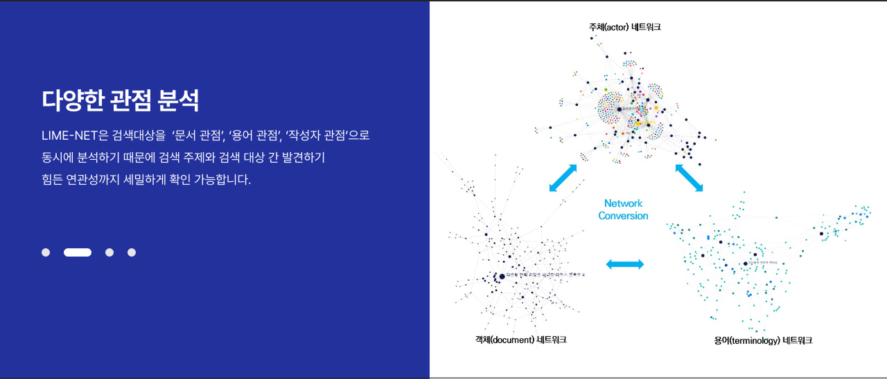

핵심기술
특장점

주요기능
Data Engineering
수집-전처리-검색-분석 파이프라인의 자동화로 변화하는 데이터 실시간 동기화
중첩구조의 데이터 마트를 구성하고 검색엔진 적재하여 다차원 분석에 빠른 속도의 검색 서비스 제공
Visualization (시각화)
분석결과에 직접 접근하여 분석하고 의사결정 할 수 있는 사용자 편의성이 고려 된 시각화 도구 제공
토픽모델링, 다차원네트워크 분석도 등 Web Base의 최적화 된 시각화 도구 제공
Analysis (분석)
각종 코어 분석 모듈 및 학습 모델을 이식하여 분석할 수 있는 플랫폼을 구성하여 서비스를 제공
임베딩을 통한 네트워크분석, 토픽모델링, 과학기술표준분류 모델 등의 자연어 처리 분석 모듈 탑재
LLM모델을 활용한 RAG 파이프라인을 구축
활용예시
도입효과
Data Engineering
수집-전처리-검색-분석 파이프라인의 자동화로 변화하는 데이터 실시간 동기화
Visualization (시각화)
분석결과에 직접 접근하여 분석하고 의사결정 할 수 있는 사용자 편의성이 고려 된 시각화 도구 제공
Analysis (분석)
각종 코어 분석 모듈 및 학습 모델을 이식하여 분석할 수 있는 플랫폼을 구성하여 서비스를 제공
Analysis (분석)
각종 코어 분석 모듈 및 학습 모델을 이식하여 분석할 수 있는 플랫폼을 구성하여 서비스를 제공
Analysis (분석)
각종 코어 분석 모듈 및 학습 모델을 이식하여 분석할 수 있는 플랫폼을 구성하여 서비스를 제공
활용분야
진단 지원
CDSS는 환자의 증상, 병력, 검사 결과를 분석하여 가능한 진단을 제안하거나 진단의 정확성 향상에 기여
치료 계획 수립
환자의 상태에 따라 최적의 치료 방안을 제시하거나, 특정 약물의 부작용 및 약물 상호작용을 예측하여 치료 계획을 조정하는 데 사용
의료 오류 감소
CDSS는 의사들이 환자의 데이터를 보다 체계적으로 분석하게 함으로써 의료 오류를 줄이는 데 기여
환자 모니터링 및 관리
만성질환 환자들을 위한 모니터링을 지원하고, 위험 신호를 조기에 포착하여 의료진이 신속하게 대응할 수 있도록 지원